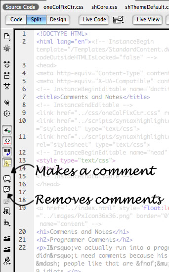

Writing code is hard, slow, laborious, and error-prone. Also, what makes perfect sense when you are writing it, can become confusing one year later when you are asked to make one small change. There is no such thing as writing too many comments.
I’ve actually run into a programmer who said that his code didn’t need comments because his code is self-documenting — people like that are ƒμçℵιñ9 idiots.
Dreamweaver has a couple of buttons in the Code or Split view toolbar. The process for creating a comment using the Dreamweaver button is as follows:
Uncommenting some text is easier:
Of course, we can’t make this easy and use just one type of comment. The syntax for a comment varies depending on where in the code you need it.
Possibly the ugliest style of comments I've come across so far. These are a "wrapping" style comment that begin with <!-- and end with -->. For example,
<!-- The next line is a paragraph. --> <p>This is a paragraph.</p>
These comments appear amoungst your HTML code; in other words, anywhere on a web page that is NOT inside a <style> tag or <script> tag.
To make your life easy, put a space after the opening tag and a space right before the closing tag. It's not required, but it looks nice and and is easier to remember than the official rules.
Comments must start with the four character sequence U+003C LESS-THAN SIGN, U+0021 EXCLAMATION MARK, U+002D HYPHEN-MINUS, U+002D HYPHEN-MINUS (<!--). Following this sequence, the comment may have text, with the additional restriction that the text must not start with a single U+003E GREATER-THAN SIGN character (>), nor start with a U+002D HYPHEN-MINUS character (-) followed by a U+003E GREATER-THAN SIGN (>) character, nor contain two consecutive U+002D HYPHEN-MINUS characters (--), nor end with a U+002D HYPHEN-MINUS character (-). Finally, the comment must be ended by the three character sequence U+002D HYPHEN-MINUS, U+002D HYPHEN-MINUS, U+003E GREATER-THAN SIGN (-->).
JavaScript allows both single-line and block (wrapping) style comments. To comment out a single line of code, prefix the line with //. Block comments start with a /* and end with */. Example:
if (a>b) {
//a is larger than b (this is a comment)
smaller = b;
} else {
/* b is the larger number
because this is the inverse action.
By the way, this is a block comment. :-) */
smaller = a;
}
These comments appear inside <script> tags in a web page, or in an exteral *.js file.
CSS comments are only block (wrapping) style comments; they start with a /* and end with */. Example:
section {
color:#873A0F; /* Rich brown, oh yeah, this is a comment */
}
These comments appear inside <style> tags in a web page, or in an exteral *.css file.
Dreamweaver gives you an additional way to write comments to yourself. Honestly, I have yet to find a good use for this feature for the sites I've been building – turn it off unless you really need it. The workflow features baked into the Design Notes could work well if you are on a team of developers. To enable the Design Notes, you’ll find that option under Site/